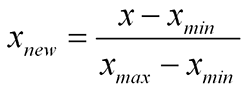
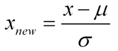
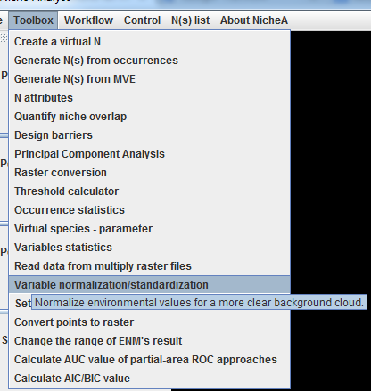
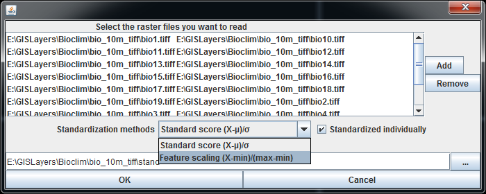

Variable normalization/standardization
In the overall ecological modeling process, before modeling itself, data preprocessing plays a crucial role. One of the first steps concerns the normalization of the data. This step is very important when dealing with parameters of different units and scales (Temperature vs Precipitation for instance). For example, some ENMs use the Euclidean distance. Therefore, all parameters should have the same scale for a fair comparison between them. Two methods are usually well known for rescaling data. Normalization, which scales all numeric variables in the range [0,1]. One possible formula is given below:

On the other hand, you can use standardization on your data set. It will then transform it to have zero mean and unit variance, for example using the equation below:

In NicheA, we use "Variable normalization/standardization" function to standardized the environmental variables (Fig.1) which are stored as supported raster formats (GeoTiff ot ASC). The function can regard the all the selected variables as group (uncheck the "standardized individually" in Fig. 2) or individually (check the "standardized individually"), and standardize the variables with one of the method above.

